Welcome: Process Over Output
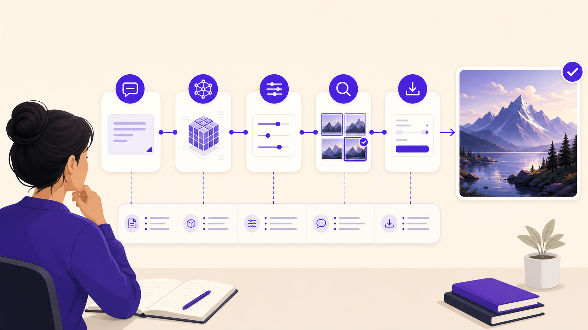
This final lesson brings the course together by moving from single image generation toward structured, reusable AI image-generation pipelines. The goal is not to memorize every ComfyUI node. The goal is to think like a creative workflow designer who can explain how an image was generated, corrected, enhanced, exported, and evaluated.
Core learning question
How can I design an AI image workflow that is controlled, reusable, documented, and creatively meaningful?
Readiness checklist
Lesson Map: From Generate Button to Reusable Pipeline
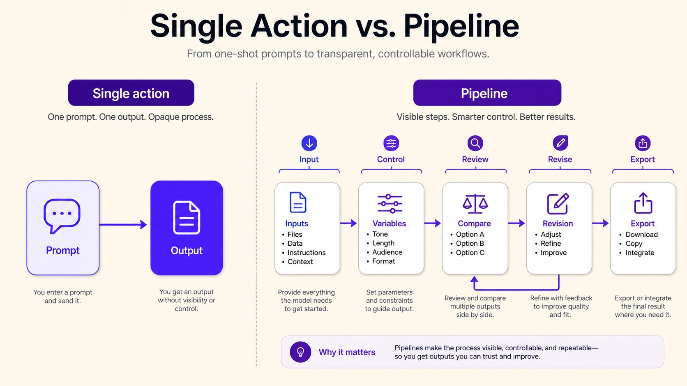
| Mission | Interaction | Main skill |
|---|---|---|
| Workflow Mindset | Gap-fill + click-to-reveal | Recognize the difference between a single action and a controlled production process. |
| Interface Detective | Sorting task | Compare simple interfaces with node-based workflow systems. |
| Node Vocabulary Quest | Flashcards + matching | Define node, graph, input, output, model, checkpoint, sampler, seed, latent, and reuse. |
| Pipeline from Previous Lessons | Sequencing + mapping | Translate inpainting, outpainting, references, upscaling, and typography into pipeline steps. |
| Conceptual ComfyUI Builder | Drag-and-drop node graph | Build a basic workflow without needing full technical mastery. |
| Pipeline Decision Matrix | Scenario challenge | Choose the correct pipeline steps for a creative goal. |
| Debug the Workflow | Hotspot / error cards | Identify missing inputs, undocumented settings, premature upscaling, and weak evaluation. |
| Final Boss | Mini-project + presentation | Present a complete documented creative pipeline. |
Learning outcomes
- Explain what ComfyUI is and why node-based workflows are useful for advanced image generation.
- Distinguish between simple image-generation interfaces and modular pipeline systems.
- Define pipeline, node, graph, input, output, model, checkpoint, sampler, latent image, and workflow reuse.
- Describe how prompting, references, inpainting, outpainting, upscaling, and controlled variation can be combined into a repeatable process.
- Design a basic AI image-generation pipeline conceptually.
- Document and present a complete creative workflow using process, control, limitations, and design decisions.
Single Action or Pipeline?
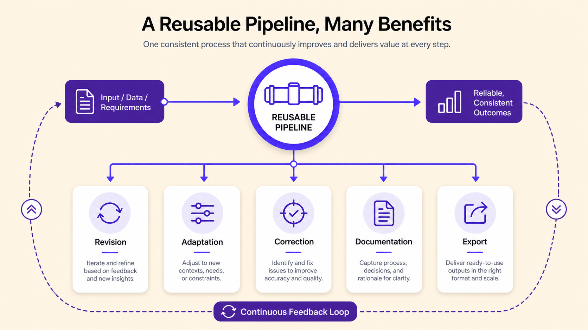
A simple image generator often appears to work as a single action: write a prompt, click generate, and receive an image. This is useful for ideation, but limited for production. Advanced AI image work is therefore less about finding one perfect prompt and more about designing a controlled sequence of operations.
Gap-Fill 1 — Pipeline Thinking
Complete the definitions using the word bank.
Simple Interface vs Node-Based Interface
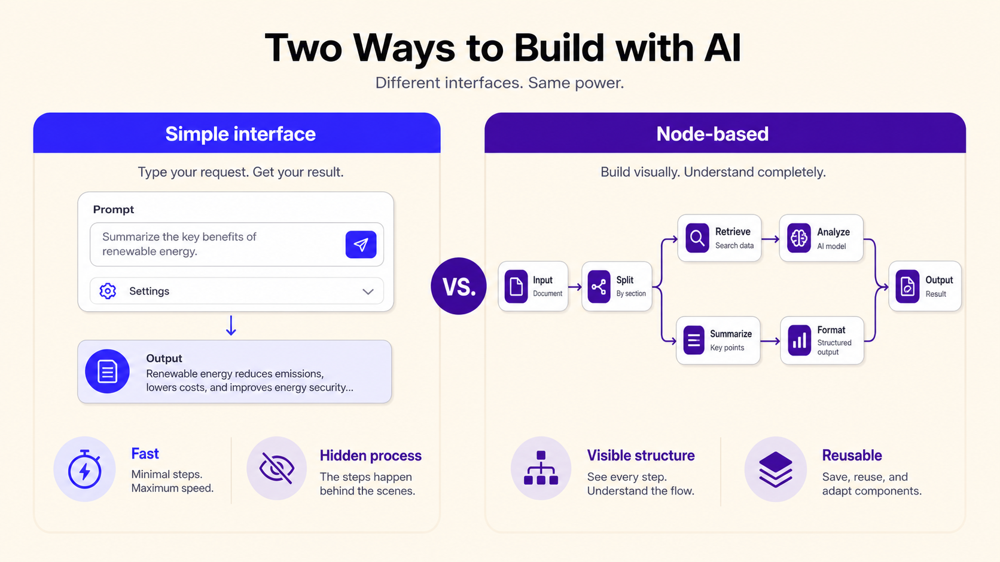
This lesson does not reject simple tools. Different interfaces serve different stages of the creative process.
| Simple interface | Node-based interface |
|---|---|
| Easy to start; often uses one prompt box and a generate button. | More complex to learn; uses connected nodes and visible workflow structure. |
| Good for brainstorming and first visual directions. | Good for reusable pipelines, controlled production, and technical documentation. |
| Many processes are hidden behind platform defaults. | Model loading, prompts, seed, sampler, decoding, upscaling, and saving can be visible. |
| Output-oriented: emphasizes the final image. | Process-oriented: emphasizes how the image is produced. |
Activity — Interface Detective
Sort each feature into the best category: simple interface, node-based interface, or both.
ComfyUI Concept Map
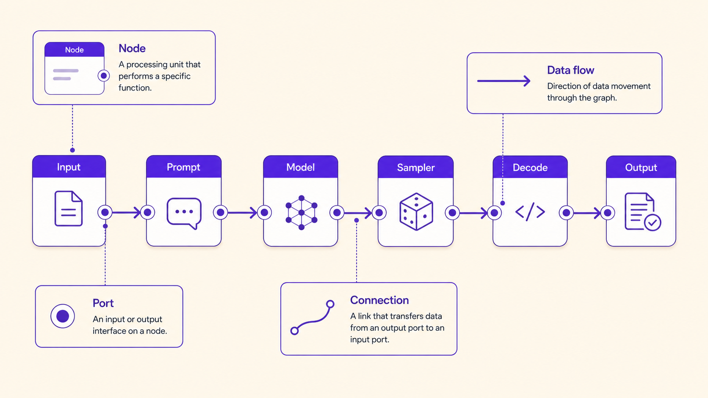
ComfyUI is used as the main conceptual example because it represents AI image generation as a graph of connected operations rather than a single prompt box.
Node Vocabulary Gap-Fill
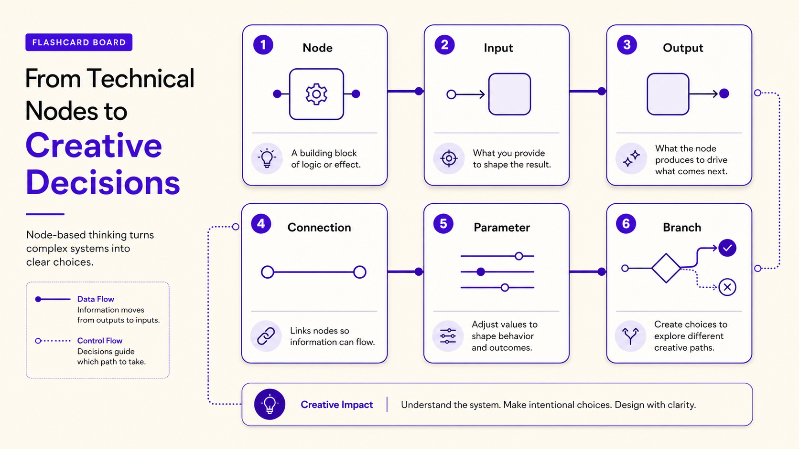
Complete the node-based workflow definitions.
Pipeline from Previous Lessons
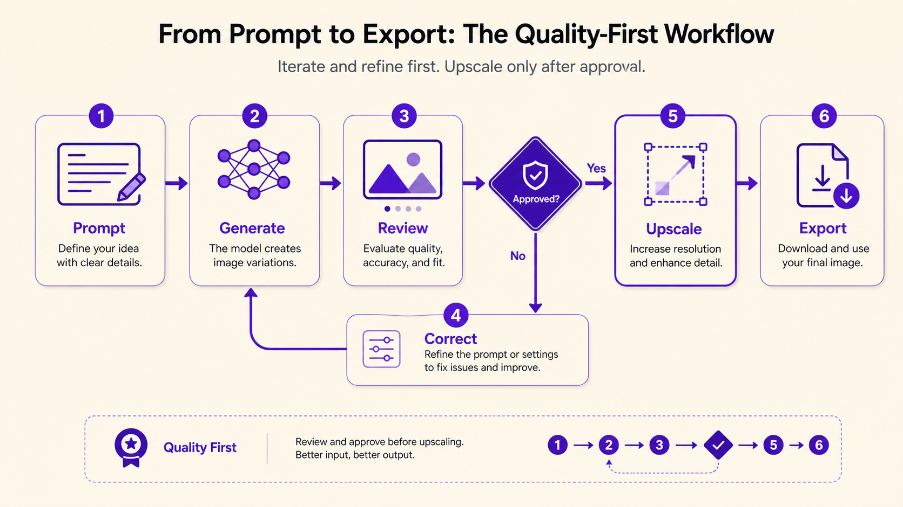
Previous course activities already functioned as pipelines. Rewrite one as a reusable process by identifying inputs, operations, outputs, and decisions.
| Step | Input | Operation | Output | Decision made |
|---|---|---|---|---|
| 1 | Prompt, sketch, reference, or previous image | Generate first image | Initial visual result | Select or reject based on concept and composition. |
| 2 | Image and mask | Inpaint problem area | Corrected local detail | Decide whether the edit matches style and lighting. |
| 3 | Corrected image | Outpaint or expand frame | New composition format | Decide whether added space supports layout. |
| 4 | Final candidate | Upscale or enhance | Presentation-ready version | Check artifacts and invented detail. |
| 5 | All process notes | Document and present | Explainable workflow | Decide what the process demonstrates. |
Your mapping
| Course technique | Input | Operation | Output | Decision |
|---|---|---|---|---|
| Prompt engineering | ||||
| Reference / sketch | ||||
| Inpainting / outpainting | ||||
| Upscaling / export |
Conceptual ComfyUI Builder
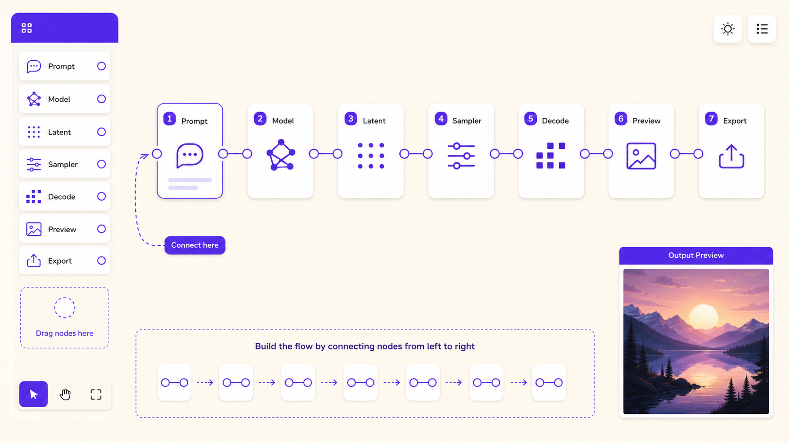
Instructions: Build a conceptual text-to-image graph. Drag or order the node cards logically. Then explain which nodes are inputs, transformations, and outputs.
| Node card | Role | Expected position |
|---|---|---|
| Load checkpoint / model | Selects the trained system that will generate the image. | Early input stage. |
| Positive prompt | Describes what should appear. | Input before sampling. |
| Negative prompt | Describes what to avoid, if supported. | Input before sampling. |
| Seed | Initializes randomness. | Input to generation. |
| Sampler and steps | Controls denoising method and iteration count. | Generation operation. |
| Latent image | Intermediate representation produced during generation. | Intermediate output. |
| Decode image | Converts latent representation into visible pixels. | After latent generation. |
| Preview / save | Lets the user inspect and export. | Final output stage. |
Pipeline Decision Matrix
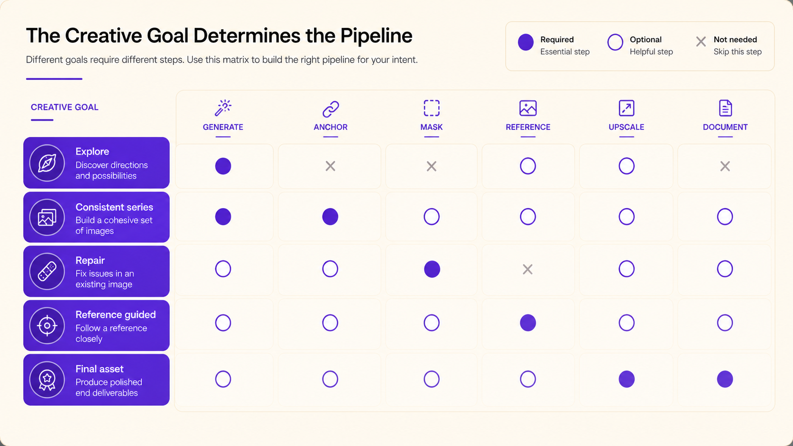
Choose the most appropriate pipeline route for each creative goal.
Debug the Workflow
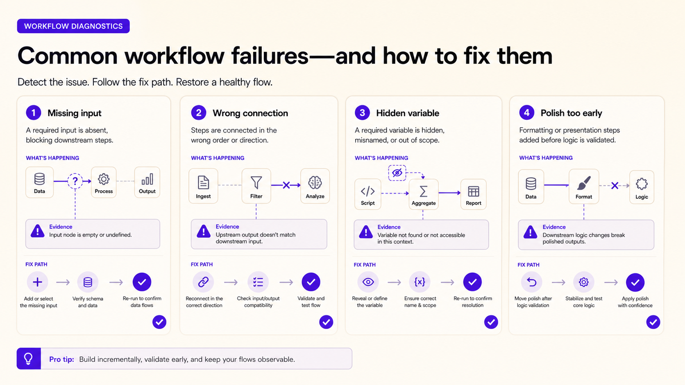
Instructions: Read each flawed workflow and identify the main problem. Then choose the best correction.
Process Documentation Checklist
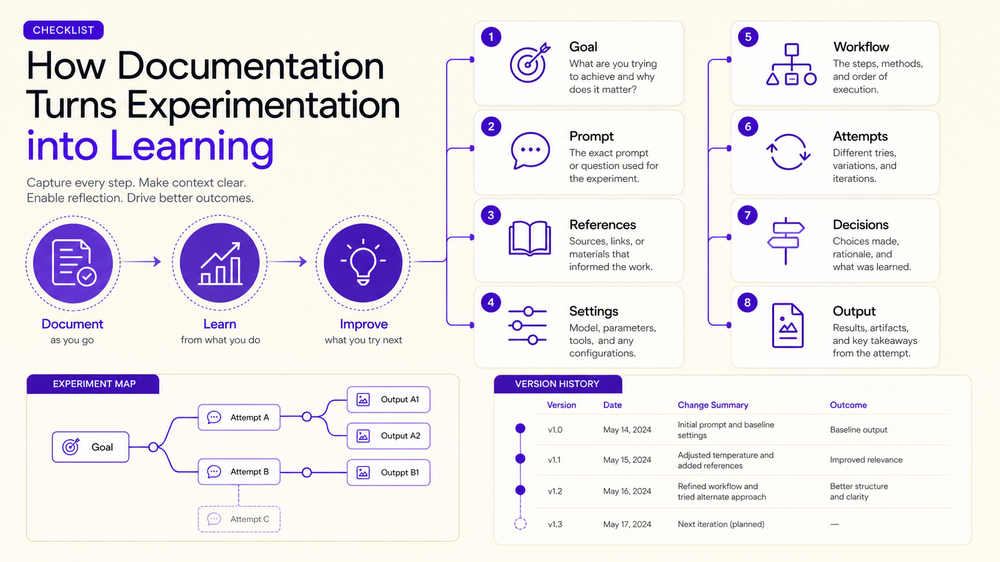
Process documentation allows results to be repeated, revised, explained, and evaluated.
| Documentation field | Your notes |
|---|---|
| Brief interpretation | |
| Input materials | |
| Prompt / settings | |
| Correction or enhancement step | |
| Final decision |
Reusable Workflow Templates
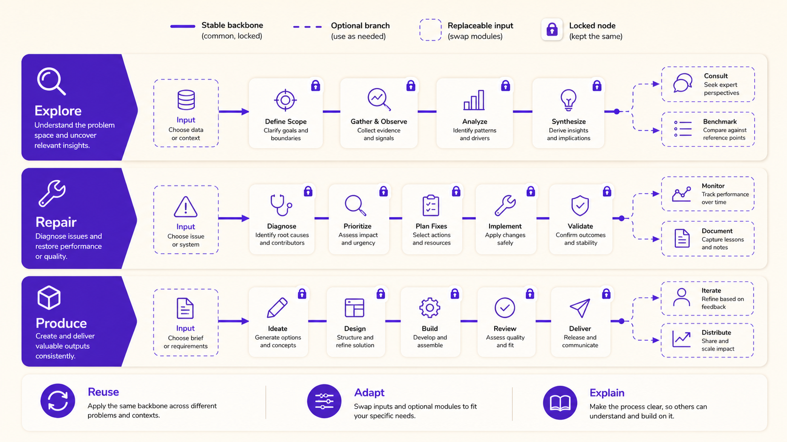
Template 1 — Pipeline Log
| Stage | Input | Operation | Output | Decision |
|---|---|---|---|---|
| Brief | ||||
| Prompt / reference | ||||
| Generate | ||||
| Evaluate | ||||
| Repair / expand | ||||
| Upscale / export | ||||
| Present |
Template 2 — Node Graph Notes
| Node / step | What it does | Input | Output | Reuse potential |
|---|---|---|---|---|
Final Boss: Process Over Output
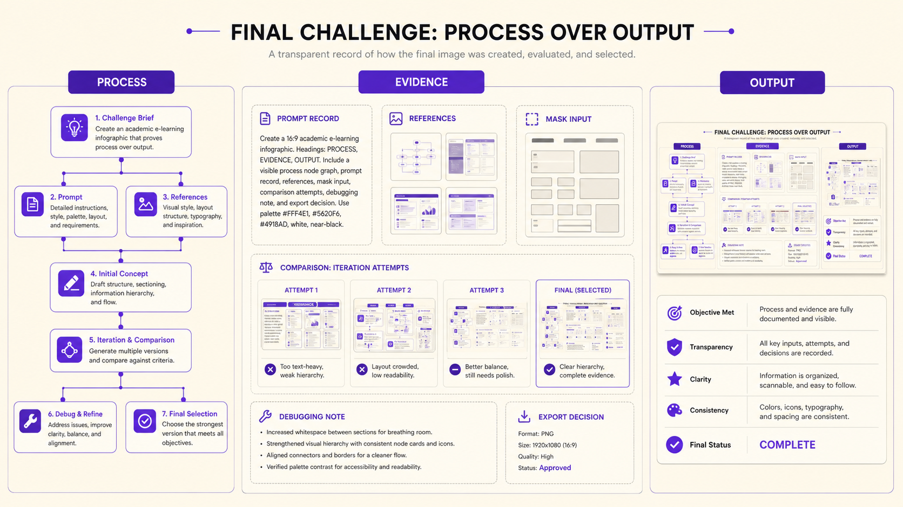
Challenge brief
Create a visual piece for “Human Creativity and Artificial Intelligence: Process Over Output.” Integrate at least three course techniques into one documented workflow.
| Stage | What to record |
|---|---|
| Brief interpretation | |
| Reference or sketch | What it controls: composition, color, mood, layout, pose, or structure. |
| Initial prompt | |
| First result evaluation | What worked, what failed, and what should remain unchanged. |
| Partial generation step | What you inpainted or outpainted and why. |
| Resolution enhancement | Upscaling method and whether it introduced artifacts or invented detail. |
| Final output | Format, intended use, and reason for selecting this version. |
| Process reflection | The most important creative or technical decision. |
| Rubric criterion | Guiding question |
|---|---|
| Conceptual clarity | Does the image respond to the brief? |
| Workflow design | Are the steps intentional and connected? |
| Reference use | Was the reference or sketch used clearly and responsibly? |
| Prompt quality | Are prompts structured and purposeful? |
| Partial generation | Was inpainting or outpainting used effectively? |
| Resolution preparation | Was upscaling or enhancement appropriate? |
| Documentation | Can the student explain how the result was produced? |
| Responsible use | Are copyright, bias, brands, and imitation risks avoided? |
Final Assessment
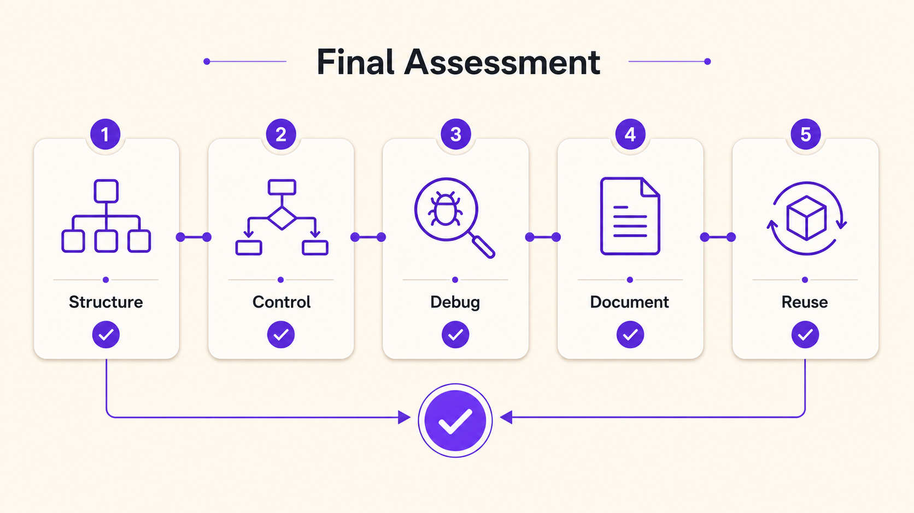
Short answer
| Question | Your answer |
|---|---|
| Explain the difference between a simple one-step generation process and a pipeline-based workflow. | |
| Design a short conceptual pipeline for creating a final poster background about human-AI creativity. |
Course Synthesis and Completion
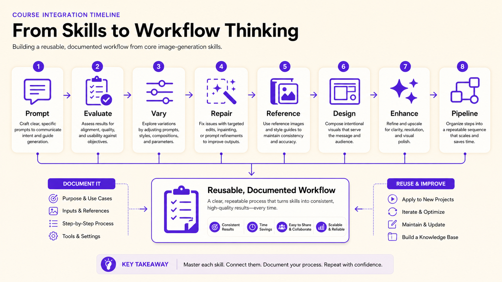
Lesson 10 consolidates the course by shifting from single-image generation toward pipeline-based creative production. A pipeline is a connected sequence of inputs, operations, outputs, evaluations, and decisions. This way of working makes AI image generation more controllable, reusable, explainable, and professionally relevant.
The key lesson is that advanced AI image generation is not only about producing an impressive result. It is about designing a process that can be revised, defended, repeated, adapted, and evaluated.
Exit ticket
| Prompt | Your answer |
|---|---|
| One pipeline concept I can now explain is... | |
| One workflow step that should remain human-led is... | |
| One setting or input I should document is... | |
| One rule I will follow before presenting AI-generated images is... |
Completion checklist
| Task | Complete |
|---|---|
| Completed the workflow-thinking gap-fill. | ☐ |
| Sorted single-action, pipeline-step, and human-decision cards. | ☐ |
| Matched node-based workflow vocabulary. | ☐ |
| Built a basic conceptual text-to-image node graph. | ☐ |
| Mapped a previous lesson task as a reusable pipeline. | ☐ |
| Completed the pipeline decision matrix. | ☐ |
| Debugged a flawed workflow. | ☐ |
| Completed the final process-over-output challenge. | ☐ |
| Completed the final assessment and exit ticket. | ☐ |